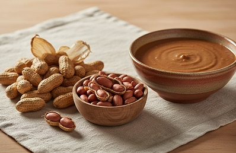

Plant-based
Plant-based
Pondu
Slow-cooked cassava leaves, deeply comforting.
Food. Culture. Connection.
The shared table · Vol. 01
From a slow-simmered pot of pondu to the smoke of a Nairobi grill. Come discover the recipes, people, and traditions that bring us together.
Explore the recipesThere’s always room at the table.

Welcome to our table
Africa’s food is as diverse as its landscapes, languages, and communities. We follow the ingredients, listen to the stories, and share recipes with their roots intact. This is a place to learn, cook, and connect.
The recipe edit
Follow your curiosity
Four starting points, never the whole story. Explore the places and traditions behind the plate.
Jollof, grains & generous tables
Highland harvests & coastal spice
Slow tagines & fragrant kitchens
Open fires & layered histories
The journey continues in Central Africa, too. Discover Congolese pondu in our recipe collection.
Beyond the recipe

Ingredient journal
How one pantry staple brings body and warmth to very different kitchens.
6 min readAt the table
On the Kenyan tradition of slowing down, gathering close, and sharing the grill.
5 min read
Kitchen notes
Meet matoke, a staple with a place at the heart of many Ugandan meals.
4 min read